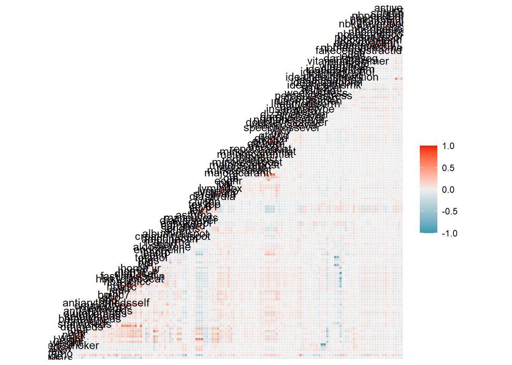
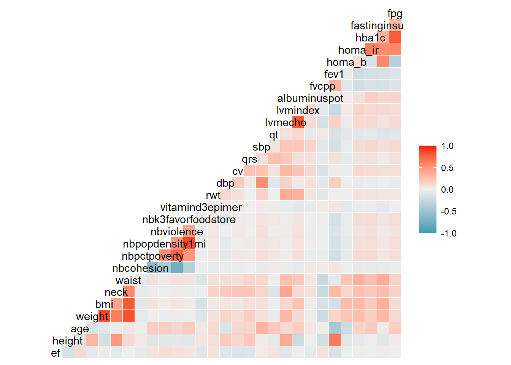
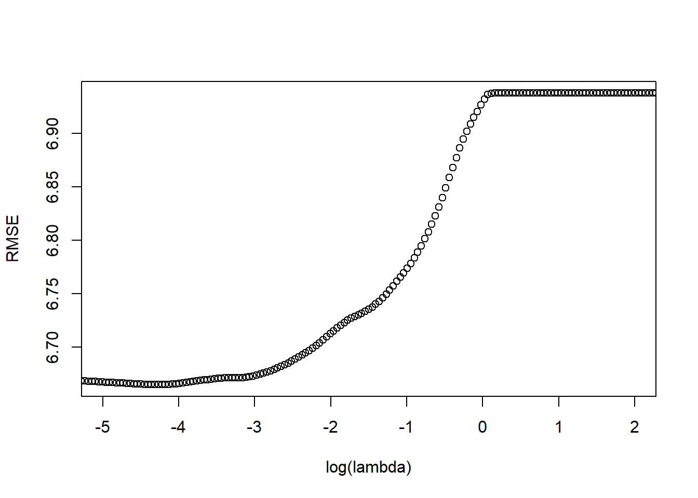
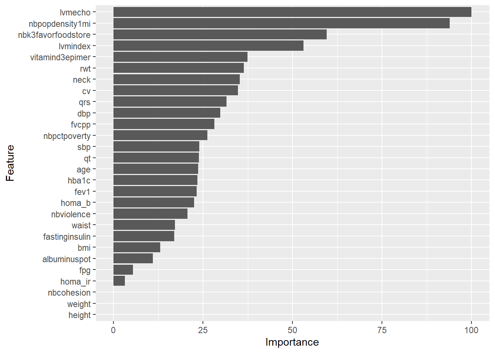
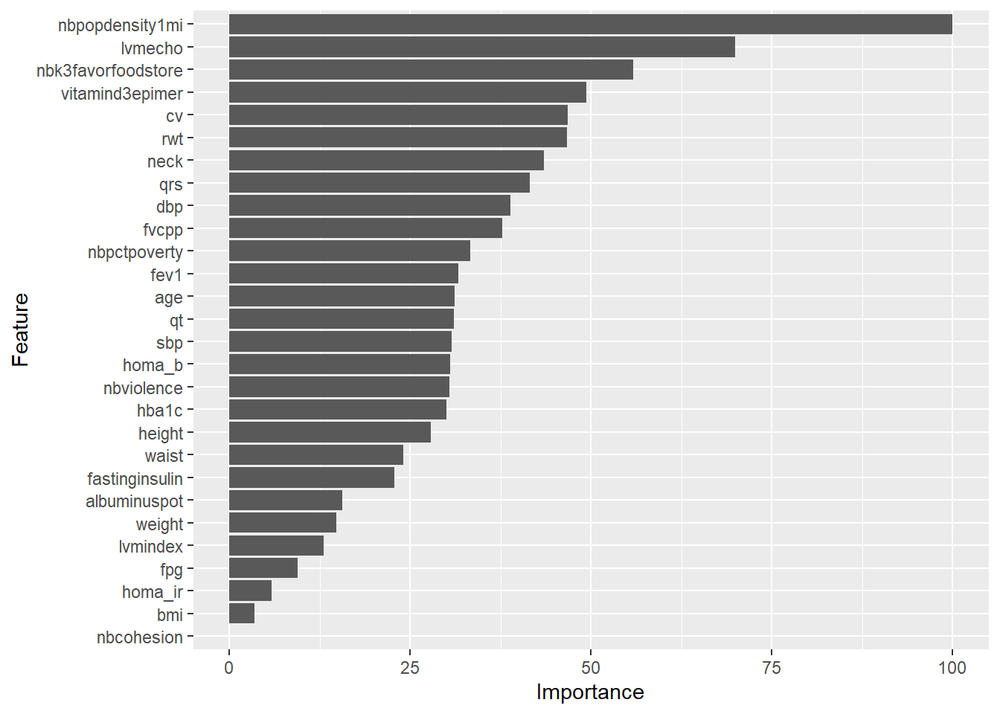

4 Regularized Regression and the Jackson Heart Study Dataset: Multicollinearity
We chose the Jackson Heart Study (JHS) dataset to demonstrate multicollinearity and create an environment in which Ridge Regression typically outperforms the LASSO method. When two or more variables are highly collinear, LASSO regression will select one randomly and drop the others to zero. Elastic Net adapts the properties of both LASSO and Ridge, so dropping coefficients is more difficult than LASSO, but can still occur. Whereas, Ridge regression will keep highly collinear variables and adjust their importance with weight. Although this technique introduces more variability in the coefficients and p-values, the prediction of the dependent variable is not affected. Ridge performs well when there are more observations than variables and does well with multicollinearity. Although we started by observing the full JHS Visit 1 dataset of 2653 observations and 198 variables with the correlation matrix, we simplified the final model used for the Regularization Regression methods to exclude non-numeric data and categorical data and to include variables from several “hot spots” from the larger correlation matrix shown below. It is important to note that these regularization regression techniques can be used with other methods such as logistic regression had we decided to analyze the categorical data as well. However, many of the categorical variables were, in fact, composites of or redundant variables to the continuous variables included in this study.
4.1 Correlation Matrix heat map suggests multicollinearity for Jackson Heart Study Visit 1
Visit 1
4.2 Variance Inflation Factor and Tolerance Scores suggest severe multicollinearity in Jackson Heart Study Visit 1
4.2.0.1 VIF Function gives Multicollinearity error for Linear Model of Ejection Fraction
4.2.1 Analysis of matrix “hot spots” demonstrates the LASSO’s feature selection capabilities and the Ridge’s ability to preserve a highly collinear model with competitive results

VIF Tolerance
height 31.358866 0.031888908
age 2.310040 0.432892905
weight 104.244240 0.009592856
bmi 95.368793 0.010485610
neck 2.502269 0.399637366
waist 4.355093 0.229616199
nbcohesion 2.424089 0.412526140
nbpctpoverty 2.675049 0.373824975
nbpopdensity1mi 4.822823 0.207347436
nbviolence 3.570020 0.280110446
nbk3favorfoodstore 4.517589 0.221357033
vitamind3epimer 1.037610 0.963753300
rwt 1.210239 0.826283110
dbp 1.788176 0.559229062
cv 1.261053 0.792988047
qrs 1.261875 0.792471777
sbp 1.945465 0.514015914
qt 1.212909 0.824464181
lvmecho 56.301555 0.017761499
lvmindex 50.257911 0.019897365
albuminuspot 1.104439 0.905436835
fvcpp 2.201059 0.454326743
fev1 4.838928 0.206657329
homa_b 2.979653 0.335609586
homa_ir 2.263362 0.441820566
hba1c 3.265512 0.306230659
fastinginsulin 3.097308 0.322861002
fpg 4.236465 0.236045863VIF’s are found by regressing each predictor variable on all the other predictor variables. The higher the calculated R2 value, the better the performance of the regression model. Variance Inflation Factor (VIF) is the reciprocal of 1-R2. The typical cutoff for VIF is 5. A VIF score above 5 signifies severe multicollinearity and an increase in variance of the coefficients as a result. This inflation can be a large contributing source of Type II (False Negative) error in linear regression. A VIF < 3 signifies a low correlation. Note the extreme VIF scores for several variables shown here, confirming our suspicions of multicollinearity in the data. The tolerance is the reciprocal of the VIF. It is calculated as 1-R2. Acceptable Tolerance scores are 0.25 and higher.
Taken together, there is evidence of multicollnearity in the data that could pose a problem with interpretations of linear models. LASSO, Ridge and ElasticNet are most valuable for predictions that are more resistant to the multicollinearity problems that arise with general linear models. Next we will highlight LASSO’s built-in feature selection capabilities and demonstrate Ridge Regression’s ability to outperform LASSO given the right circumstances. The regularized model is more stable with predictions than coefficient and p-values.
Regularization regression models are best at predictions. so, before we run regularization steps, we need to partition the data for training and testing, and find the optimal lambda in order to train the predictive models. To simplify, we will work with continuous data and variables found in several “hot spots” from the large correlation matrix above.
4.2.2 LASSO Regression (L1)
4.2.3 Finding Optimal Lambda with 10-fold Cross Validation
alpha lambda
159 1 0.01466671[1] 0.01466671
LASSO Predicts Variable Importance using the sum of decrease in error by each variable. Relative importance is variable importance standardized to the highest valued variable.

Note that LASSO has dropped 3 variables from the model: height, weight and nbcohesion. It kept variables such as bmi (a composite of height and weight). Eliminating redundant variables demonstrates LASSO’s automatic feature selection properties. These variables had very large VIF and low Tolerance scores, so dropping them from the model will likely not affect the model’s ability to predict ejection fraction.
29 x 1 sparse Matrix of class "dgCMatrix"
s1
(Intercept) 62.06311823
height .
age 0.37433590
weight .
bmi -0.20621469
neck 0.55728216
waist 0.27193781
nbcohesion .
nbpctpoverty -0.41411821
nbpopdensity1mi 1.48446824
nbviolence 0.32721465
nbk3favorfoodstore -0.94216393
vitamind3epimer -0.59175868
rwt 0.57516426
dbp -0.47172460
cv -0.54967558
qrs -0.49977220
sbp 0.37892530
qt 0.37706281
lvmecho -1.58162530
lvmindex 0.83933373
albuminuspot -0.17443143
fvcpp 0.44543967
fev1 -0.36674425
homa_b -0.35596479
homa_ir 0.05015134
hba1c -0.37127668
fastinginsulin 0.26863477
fpg -0.086273524.2.4 Ridge Regression (L2)

Note that Ridge has preserved all the variables in the model.
29 x 1 sparse Matrix of class "dgCMatrix"
s1
(Intercept) 62.063118229
height -0.328942291
age 0.367253633
weight -0.177554773
bmi -0.046283161
neck 0.509833915
waist 0.284977446
nbcohesion 0.005698985
nbpctpoverty -0.391973095
nbpopdensity1mi 1.165485436
nbviolence 0.358429644
nbk3favorfoodstore -0.653056339
vitamind3epimer -0.578156859
rwt 0.546975215
dbp -0.456671077
cv -0.548001203
qrs -0.487851438
sbp 0.362746921
qt 0.365676114
lvmecho -0.816777075
lvmindex 0.156455130
albuminuspot -0.187184851
fvcpp 0.443247304
fev1 -0.373001677
homa_b -0.359786953
homa_ir 0.073694767
hba1c -0.353360710
fastinginsulin 0.270718173
fpg -0.115286297Note that the Elastic Net has dropped only 2 of the same variables as LASSO above. The distinction between the two might become more pronounced with larger models.
29 x 1 sparse Matrix of class "dgCMatrix"
s1
(Intercept) 62.06311823
height .
age 0.36806785
weight -0.01070930
bmi -0.20818113
neck 0.56078455
waist 0.28205005
nbcohesion .
nbpctpoverty -0.42004989
nbpopdensity1mi 1.48073175
nbviolence 0.33299455
nbk3favorfoodstore -0.93908016
vitamind3epimer -0.59304457
rwt 0.57582898
dbp -0.47455288
cv -0.55061788
qrs -0.50091946
sbp 0.38179182
qt 0.37820512
lvmecho -1.56578638
lvmindex 0.82483823
albuminuspot -0.17629896
fvcpp 0.45225827
fev1 -0.37729951
homa_b -0.36493807
homa_ir 0.05402918
hba1c -0.37205524
fastinginsulin 0.27569625
fpg -0.095186854.3 Comparing the Models
Model performance was overall very similar among the four models tested with Ridge Regression coming out slightly ahead in this instance (lowest RMSE, highest R2 values).
RMSE R-squared
LASSO 6.650703 0.04752869
Ridge 6.64124 0.0502371
ElasticNet 6.650348 0.04763028
OLS 6.645341 0.04906372